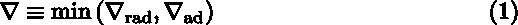
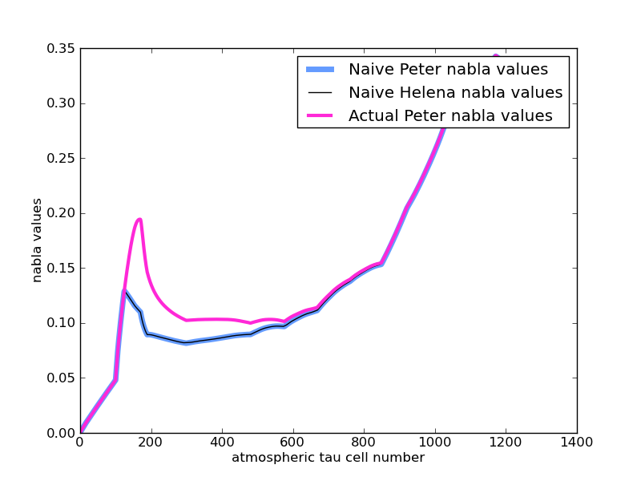

Date & Time: Nov. 12, 2012
Location: Campus
Computing context: /Desktop/Research/CppHenyeyCode, /Desktop/Research/BodenheimerCode/UnalteredCode/
Continuing from last time:
I (eventually) figured out the stuff in "Notes 1" by comparing the dTk[1-4] values in Helena to their Peter counterparts. This by itself uncovered an important typo in my dTk4 equation (using M rather then Mtemp). That's fixed, and that certainly helps, but it's not the silver bullet for the atmos profiles problem. It did, however, clue me in to the fact that the dTk[1-4] values (all 4 of them, all the time-- not one individual one of them) hold the key to getting the right profiles out of this RK4 process.
The only quantity unique to the dTk[1-4] calculations is "nab," defined in Eqn (1) as:

Today's work:
Continue with the 'nab' value debugging in the atmos subroutine.
Get Peter's code to print out the TPNAB values @ each point In the atmosphere
Get Helena to do the same.
Compare the two.

A
comparison of the nabla values used in Helena's and Peter's
atmospheric calculations. The pink curve represents the nabla values
that Peter's code actually uses in the calculations. The black and
blue curves represent the nabla values you'd expect to get from
Peter and Helena using Eq. (1).
Figure
1:
Interesting result (see Figure 1).
I think the difference b/w the pink and other curves may be due to Peter's code using some sort of convective energy gradient, in addition to the radiative and adiabatic ones. The question is: why isn't that info included in the ABNAB value that his code returns? And, how are the ADNAB and CONVNAB (for lack of a better variable name) values combined? Averaged? Inverse fraction adding? Simply added? Need to find the portion of his code that calculates CONVNAB & combines it w/ ADNAB to answer these questions.
Looking at the NABLA subroutine in Peter's code points to a sort of fiddly, slog-y process of incorporating the CONVNAB calculations into Helena. Before diving into that whole processes, I should check that this nabla-discrepancy-business really *is* the thing that will fix my atmos calculation problems.
To do this:
1) Use Peter's code to create a 'nabla' lookup table
2) Read that table into Helena, perhaps in place of the adnab table I'm currently using
3) Re-run Helena's atmos calculations with that new lookup table in place
4) Capture the outputs of the Helena run (in the RK4_debug... file format)
5) Plot the resultant T1 curves from that Helena run, and compare them to the T1 curves from the analogous Peter atmos calculation run.